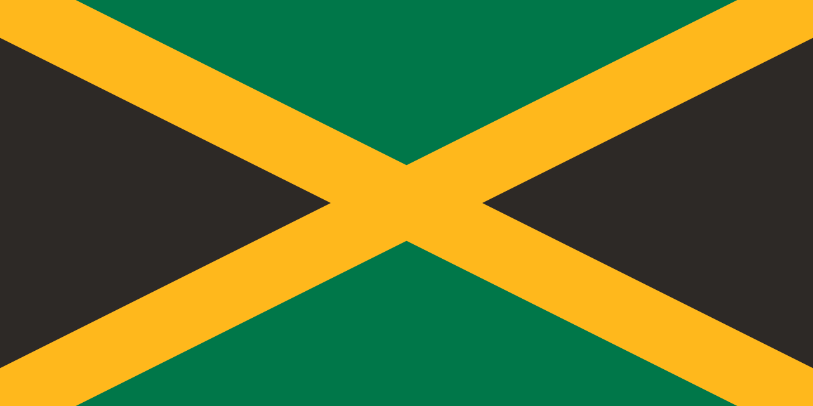
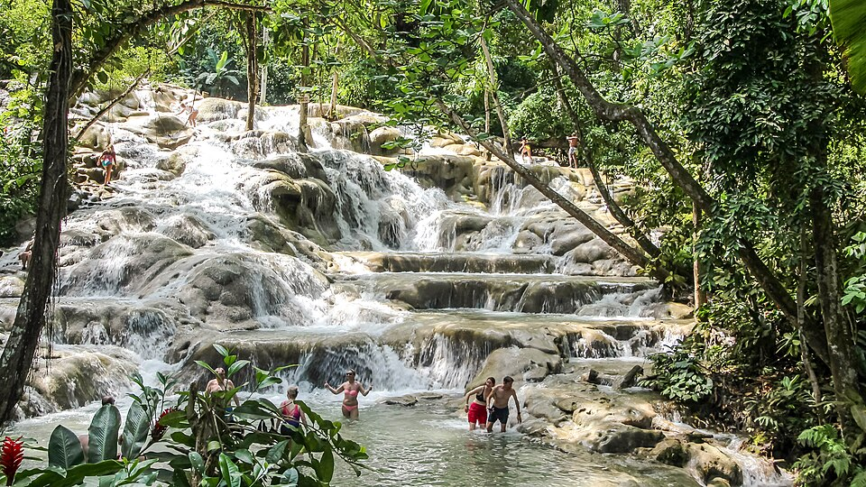
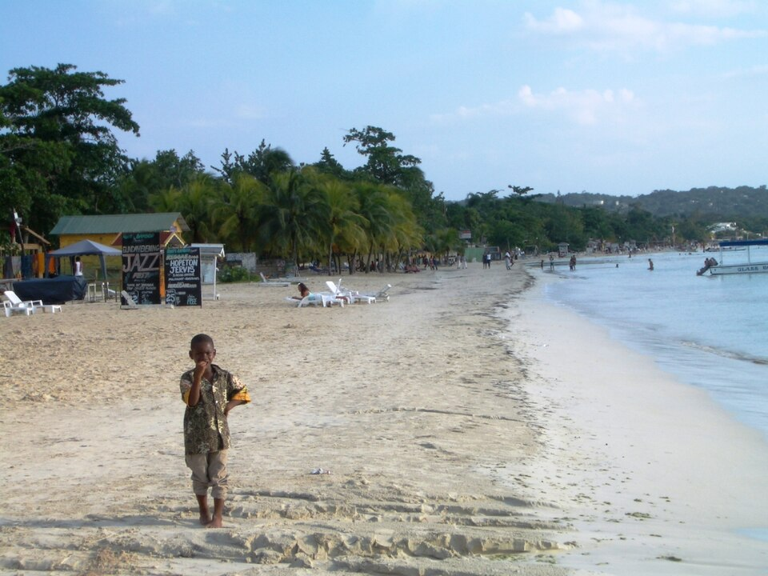
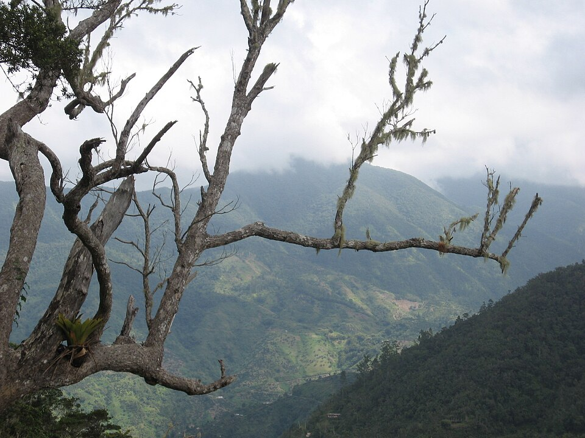

La isla del reggae, el sol y el ritmo del Caribe
Jamaica es una isla ubicada en el Mar Caribe, al sur de Cuba. Su capital es Kingston y tiene alrededor de 2,8 millones de habitantes. Se independizó del Reino Unido el 6 de agosto de 1962. El idioma oficial es el inglés, aunque en la calle se habla el patois, una lengua criolla muy típica de la isla.
Su cultura es conocida en todo el mundo gracias a la música. Allí nacieron el reggae, el ska y el dancehall. También es famosa por su comida, como el jerk chicken (pollo picante asado) y el plato nacional, el ackee and saltfish. Su lema nacional es "Out of Many, One People", que significa "De muchos, un pueblo".
El paisaje combina playas de arena blanca, selvas tropicales, cascadas y las Montañas Azules, donde se cultiva uno de los cafés más caros del mundo. El turismo es una de sus principales actividades: los visitantes llegan a lugares como Negril, Montego Bay y Ocho Ríos.

El verde representa la tierra y la esperanza, el amarillo el sol y el negro la fuerza y creatividad del pueblo.
Eternal Father, bless our land,
Guard us with Thy mighty hand,
Keep us free from evil powers,
Be our light through countless hours.
To our leaders, Great Defender,
Grant true wisdom from above.
Justice, truth be ours forever,
Jamaica, land we love.
Jamaica, Jamaica, Jamaica, land we love.
Teach us true respect for all,
Stir response to duty's call,
Strengthen us the weak to cherish,
Give us vision lest we perish.
Knowledge send us, Heavenly Father,
Grant true wisdom from above.
Justice, truth be ours forever,
Jamaica, land we love.
Jamaica, Jamaica, Jamaica, land we love.
Jamaica es una isla, por lo que no tiene fronteras terrestres. Está rodeada por el Mar Caribe.

Cascadas de Dunn's River, Ocho Ríos

Playa Seven Mile Beach, Negril

Montañas Azules (Blue Mountains)